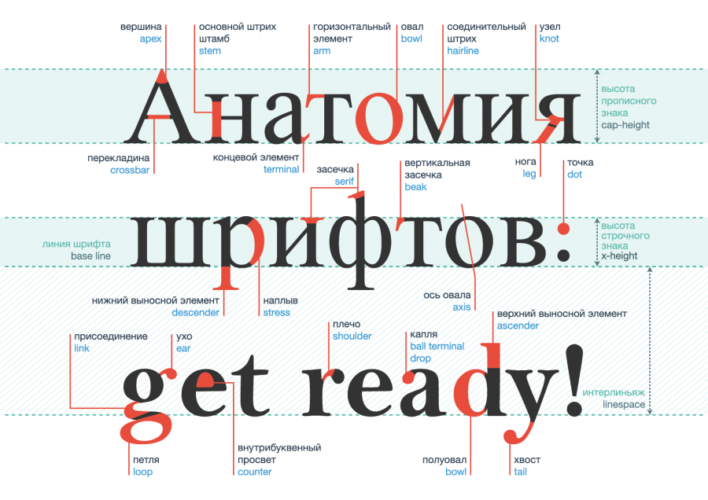
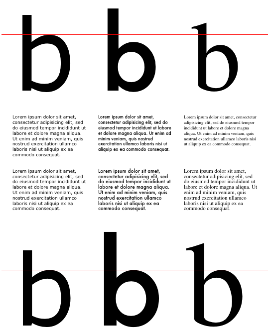

CSS-шрифты
Содержание:
- Семейство шрифтов: свойство font-family
- Насыщенность шрифта: свойство font-weight
- Ширина шрифта: свойство font-stretch
- Начертание шрифта: свойство font-style
- Размер шрифта: свойство font-size
- Относительный размер шрифта: свойство font-size-adjust
- Сокращенная запись свойств шрифта: свойство font
- Управление синтезом шрифтов: свойство font-synthesis
Семейство шрифтов: свойство font-family
Свойство font-family используется для выбора начертания шрифта. Поскольку невозможно предсказать, установлен тот или иной шрифт на компьютере посетителя вашего сайта, рекомендуется прописывать все возможные варианты однотипных шрифтов. В таком случае браузер будет проверять их наличие, последовательно перебирая предложенные варианты.
Если в названии шрифта имеются пробелы или символы (например, #, $, %), то оно заключается в кавычки. Это делается для того, чтобы браузер мог понять, где начинается и заканчивается название шрифта.
Свойство наследуется.
| font-weight | |
|---|---|
| Значения: | |
| family-name | Название (имя) семейства шрифтов, например, Times, Courier, Arial. Рекомендуется указывать вместе с базовым семейством. |
| generic-family | Базовое семейство. CSS определяет пять базовых семейств шрифтов: Шрифты с засечками — Serif (Times New Roman, Times, Garamond, Georgia) Рубленые шрифты — Sans-serif (Helvetica, Geneva, Arial, Verdana, Trebuchet, Univers) Моноширинные шрифты — Monospace (Courier, Courier New, Andele Mono) Рукописные шрифты — Cursive (Comic Sans, Gabriola, Monotype Corsiva, Author, Zapf Chancery) Аллегорические шрифты (Western, Woodblock, Klingon) |
| initial | Устанавливает значение свойства в значение по умолчанию. |
| inherit | Наследует значение свойства от родительского элемента. |
Синтаксис
font-family: "Times New Roman", Georgia, Serif;
font-family: serif;
font-family: sans-serif;
font-family: monospace;
font-family: cursive;
font-family: fantasy;
font-family: system-ui;
font-family: inherit;
font-family: initial;
Насыщенность шрифта: свойство font-weight
Свойство font-weight задаёт насыщенность шрифта.
Свойство наследуется.
| font-weight | |
|---|---|
| Значения: | |
| normal | Указывает на наиболее сжатый шрифт. |
| bold | Указывает на второй по сжатости шрифт. |
| bolder | Указывает на сжатый шрифт. |
| lighter | Указывает на немного сжатый шрифт. |
| 100, 200, 300, 400, 500, 600, 700, 800, 900 | Значение 100 соответствует самому легкому варианту начертания шрифта, а 900 — самому плотному. При этом, эти числа не определяют конкретной плотности, т.е. 100, 200, 300 и 400 могут соответствовать одному и тому же варианту слабой насыщенности начертания шрифта; 500 и 600 — средней насыщенности, а 700, 800 и 900 могут выводить одинаковое очень насыщенное начертание. Распределение плотности так же зависит от количества уровней насыщенности, определенных в конкретном семействе шрифтов. |
| initial | Устанавливает значение свойства в значение по умолчанию. |
| inherit | Наследует значение свойства от родительского элемента. |
Синтаксис
font-weight: weight;
font-weight: bold;
font-weight: lighter;
font-weight: bolder;
font-weight: 100;
font-weight: 200;
font-weight: 300;
font-weight: 400;
font-weight: 500;
font-weight: 600;
font-weight: 700;
font-weight: 800;
font-weight: 900;
font-weight: inherit;
font-weight: initial;

Ширина шрифта: свойство font-stretch
Свойство font-stretch выбирает нормальное, сжатое или расширенное начертание символа из семейства шрифтов.
Свойство наследуется.
Абсолютные значения ключевых слов имеют следующий порядок, от самого узкого до самого широкого:
| font-stretch | |
|---|---|
| Значения: | |
| ultra-condensed | Указывает на наиболее сжатый шрифт. |
| extra-condensed | Указывает на второй по сжатости шрифт. |
| condensed | Указывает на сжатый шрифт. |
| semi-condensed | Указывает на немного сжатый шрифт. |
| normal | Значение по умолчанию. |
| semi-expanded | Слегка расширенный шрифт. |
| expanded | Расширенный шрифт. |
| extra-expanded | Второй по расширенности шрифт. |
| ultra-expanded | Максимально расширенный шрифт. |
| initial | Устанавливает значение свойства в значение по умолчанию. |
| inherit | Наследует значение свойства от родительского элемента. |
Синтаксис
font-stretch: ultra-condensed;
font-stretch: extra-condensed;
font-stretch: condensed;
font-stretch: semi-condensed;
font-stretch: normal;
font-stretch: semi-expanded;
font-stretch: expanded;
font-stretch: extra-expanded;
font-stretch: ultra-expanded;
font-stretch: inherit;
font-stretch: initial;
Когда не существует глифа для заданной ширины, значения normal или condensed отображаются для более узкого начертания символа, в противном случае отображается более широкое начертание. И наоборот, расширенные значения используют широкое начертание, в противном случае — узкое начертание. На рисунке ниже показано, как девять параметров свойства влияют на выбор шрифта для семейства шрифтов, содержащего различные ширины, серый цвет указывает ширину, для которой не существует начертания, поэтому подставляется другая ширина:

Начертание шрифта: свойство font-style
Свойство font-style позволяет выбрать стиль начертания для шрифта. При этом разница между курсивом и наклонным начертанием заключается в том, что курсив вносит небольшие изменения в структуру каждого символа, в то время как наклонное начертание представляет собой наклонную версию прямого шрифта.
Свойство наследуется.
| font-style | |
|---|---|
| Значения: | |
| normal | Значение по умолчанию, устанавливает для текста обычное начертание шрифта. |
| italic | Выделяет текст курсивом. |
| oblique | Устанавливает наклонное начертание шрифта. |
| initial | Устанавливает значение свойства в значение по умолчанию. |
| inherit | Наследует значение свойства от родительского элемента. |
Синтаксис
font-style: normal;
font-style: italic;
font-style: oblique;
font-style: inherit;
font-style: initial;

Размер шрифта: свойство font-size
Свойство font-size указывает желаемую высоту глифов из шрифта.
Свойство наследуется.
| font-size | |
|---|---|
| Значения: | |
| absolute-size | xx-small, x-small, small, medium, large, x-large, xx-large. В качестве стандартного размера принимается medium. В CSS1 предложенный коэффициент масштабирования между соседними индексами составлял 1.5, что для пользователя оказалось слишком большим. В CSS2 предложенный коэффициент масштабирования для экрана компьютера между смежными индексами составлял 1.2, что все еще создавало проблемы для небольших размеров. Новый коэффициент масштабирования варьируется между каждым индексом, чтобы обеспечить лучшую читаемость. |
| relative-size | smaller, larger. Относительные размеры обусловливают изменение размера шрифта элемента относительно родителя. При этом размер шрифта может выйти за рамки размеров, предполагаемых для xx-small и xx-large. |
| длина | Размер шрифта устанавливается с помощью положительных значений единиц длины, например, px, em, как целых, так и дробных. |
| % | Относительное значение, вычисляется на основании любого размера, унаследованного от родительского элемента. Обеспечивает более точную настройку вычисляемого размера шрифта. Задание размеров шрифта с помощью em эквивалентно процентному значению. |
| initial | Устанавливает значение свойства в значение по умолчанию. |
| inherit | Наследует значение свойства от родительского элемента. |
Синтаксис
font-size: xx-small;
font-size: x-small;
font-size: small;
font-size: medium;
font-size: large;
font-size: x-large;
font-size: xx-large;
font-size: smaller;
font-size: larger;
font-size: 14px;
font-size: 0.8em;
font-size: 80%;
font-size: initial;
| font-size-adjust | |||||||
|---|---|---|---|---|---|---|---|
| xx-small | x-small | small | medium | large | x-large | xx-large | |
| 3/5 | 3/4 | 8/9 | 1 | 6/5 | 3/2 | 2/1 | 3/1 |
| h6 | h5 | h6 | h3 | h3 | h1 | ||
| 1 | 2 | 3 | 4 | 5 | 6 | 7 | |
Относительный размер шрифта: свойство font-size-adjust
Для любого заданного размера шрифта явный размер и четкость текста варьируется в зависимости от шрифта. Для таких шрифтов, как латиница или кириллица, которые различают прописные и строчные буквы, относительная высота строчных букв по сравнению с их прописными аналогами является определяющим фактором удобочитаемости. Это обычно называют значением аспекта. Точно определенный, он равен x-height шрифта, разделенной на размер шрифта.
В ситуациях, когда для шрифта указано несколько семейств шрифтов, резервные шрифты могут не использовать то же значение аспекта, что и желаемое семейство шрифтов, и, следовательно, будут казаться менее четкими.
Свойство font-size-adjust — способ сохранить читабельность текста при использовании резервных шрифтов. Это достигается путем настройки размера шрифта таким образом, чтобы x-height была одинаковой независимо от используемого шрифта.
Свойство наследуется.
| font-size-adjust | |
|---|---|
| Значения: | |
| none | Не сохраняет x-height шрифта. |
| число | Задает значение аспекта, используемое в приведенных ниже расчетах для расчета скорректированного размера шрифта: c = (a / a ') s где: s = значение размера шрифта a = значение аспекта, указанное в свойстве font-size-adjust a ' = значение аспекта фактического шрифта c = скорректированный размер шрифта для использования Отрицательные значения недействительны. |
| initial | Устанавливает значение свойства в значение по умолчанию. |
| inherit | Наследует значение свойства от родительского элемента. |
Синтаксис
font-size-adjust: none;
font-size-adjust: 0.7;
font-size-adjust: inherit;
font-size-adjust: initial;
Как отображается текст в каждом из этих сравниваемых шрифтов, показано ниже, столбцы показывают текст, отображаемый в Verdana, Futura и Times. Одно и то же значение размера шрифта используется для ячеек в каждой строке, и для отображения различий по x-height включены красные линии. В верхней половине каждая строка отображается в том же значении размера шрифта. То же самое верно и для нижней половины, но в этой половине также устанавливается свойство font-size-adjust, чтобы фактический размер шрифта регулировался таким образом, чтобы сохранить x-height для каждой строки. Обратите внимание, что небольшой текст остается относительно разборчивым в каждой строке в нижней половине.
Сокращенная запись свойств шрифта: свойство font
Свойство font за исключением описанного ниже, является сокращенным свойством для установки font-style, font-variant, font-weight, font-stretch, font-size/line-height, font-family. Также могут быть включены значения для свойства font-variant, которые поддерживаются CSS 2.1 — normal или small-caps.
Все под свойства свойства font сначала сбрасываются на свои начальные значения, включая перечисленные выше, плюс font-size-adjust, font-kerning, все под свойства font-variant и настройки шрифтов, за исключением font-synthesis. Затем этим свойствам присваиваются те значения, которые указаны в свойстве font. Для свойства font-size-adjust невозможно установить значение, отличное от его начального значения, поэтому следует использовать вместо этого индивидуальное свойство. Если явное значение какого-либо свойства не нужно, то оно опускается.
Свойство наследуется.
Синтаксис
font: 12pt/14pt sans-serif;
font: 80% sans-serif;
font: x-large/110% "new century schoolbook", serif;
font: bold italic large Palatino, serif;
font: normal small-caps 120%/120% fantasy;
font: condensed oblique 12pt "Helvetica Neue", serif;
Следующие значения относятся к системным шрифтам:
- caption — шрифт, используемый для элементов управления с субтитрами (например, кнопок, раскрывающихся списков и т.д.).
- icon — шрифт, используемый для обозначения значков.
- menu — шрифт, используемый в меню (например, раскрывающиеся меню и списки меню).
- message-box — шрифт, используемый в диалоговых окнах.
- small-caption — шрифт, используемый для маркировки подписи элементов управления.
- status-bar — шрифт, используемый в строке состояния окна.
Системные шрифты могут быть установлены только целиком;, то есть семейство шрифтов, размер, вес, стиль и т.д. задаются одновременно. Эти значения затем могут быть изменены индивидуально, если это необходимо. Ключевые слова, используемые для системных шрифтов, перечисленных выше, обрабатываются как ключевые слова только в том случае, если они находятся в начальной позиции, в других позициях эта же строка обрабатывается как часть имени семейства шрифтов. Системные шрифты могут быть указаны только с этим свойством, но не с самим font-family.
font: menu; /* используются настройки шрифта для системных меню */
font: large menu; /* используется семейство шрифтов под названием "menu" */
Управление синтезом шрифтов: свойство font-synthesis
Свойство font-synthesis определяет, разрешено ли пользовательским агентам (браузерам) синтезировать полужирное или наклонное начертание шрифтов, когда они отсутствуют в семействе шрифтов. Если weight не указан, пользовательские агенты не должны синтезировать полужирное начертание, а если style не указан, пользовательские агенты не должны синтезировать курсив.
Свойство наследуется.
| font-synthesis | |
|---|---|
| Значения: | |
| none | Запрещает синтез начертаний. |
| weight и/или style | По умолчанию свойство принимает значение font-synthesis: weight style;. Если указано только weight, это говорит браузеру, что жирный шрифт может быть синтезирован при необходимости. Если только style — синтезируется только курсив. |
| initial | Устанавливает значение свойства в значение по умолчанию. |
| inherit | Наследует значение свойства от родительского элемента. |
Синтаксис
font-synthesis: none;
font-synthesis: weight;
font-synthesis: style;
font-synthesis: weight style;
font-synthesis: inherit;
font-synthesis: initial;